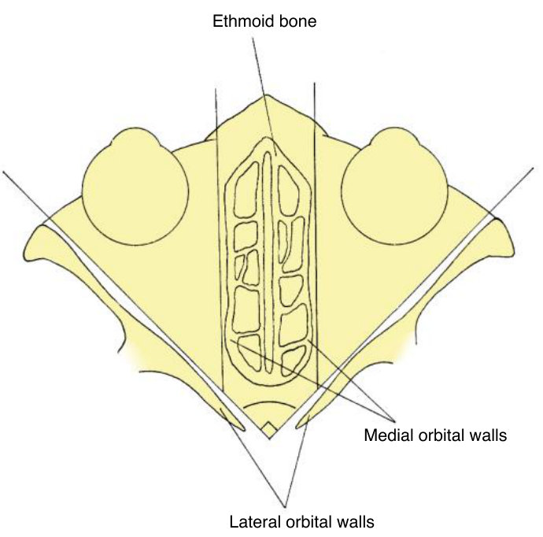
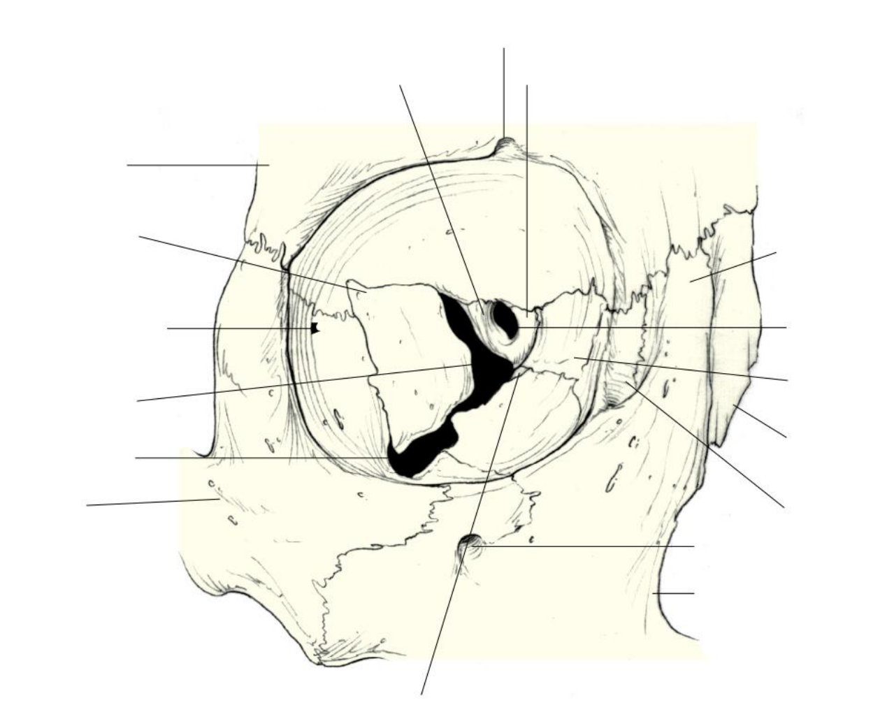
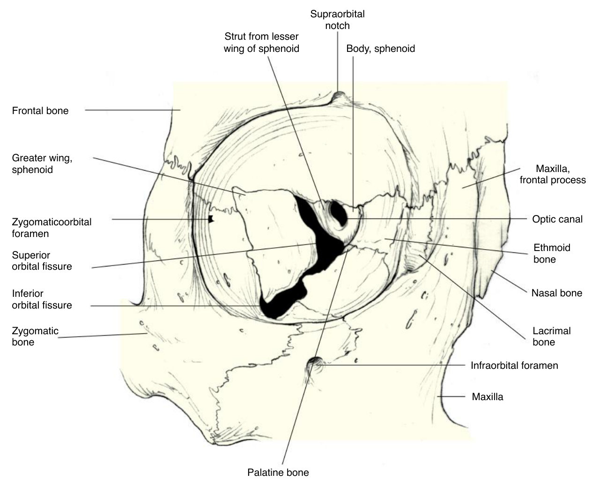
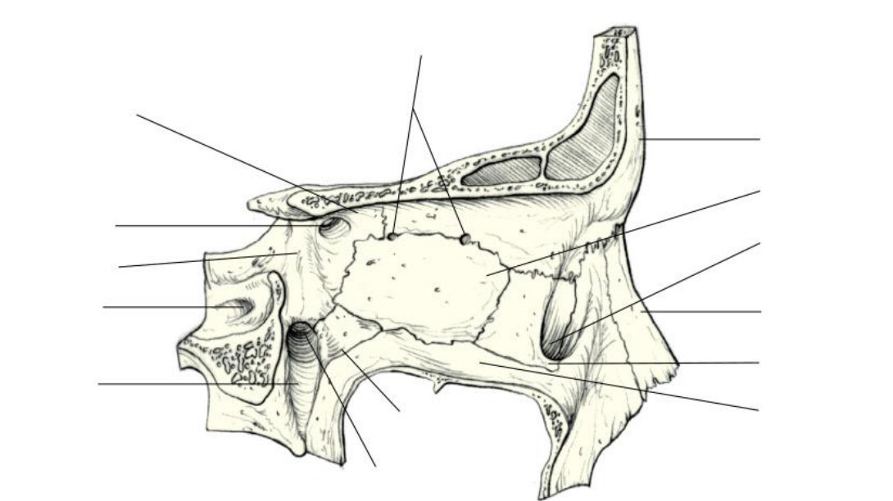
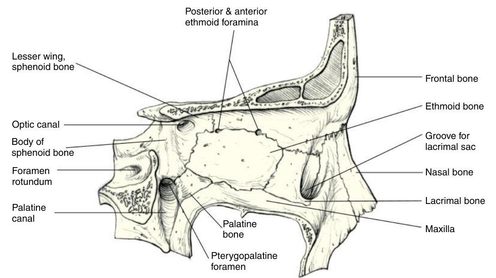
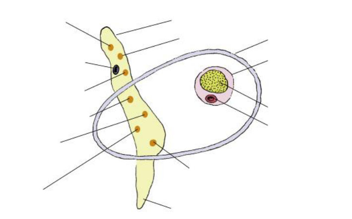
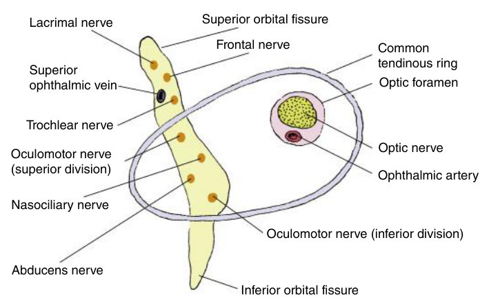
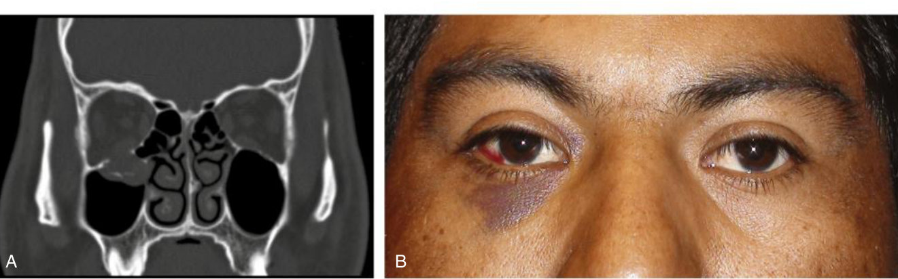

Draw the pyramid, then fill the holes
Your note on the guidelines is an instruction: "pyramide zeichnen können". So this lesson is built around one drawing you can reproduce under exam pressure.
Draw the orbit as a four-sided pyramid, write the right bones into each of the four walls, mark the three openings — and say what nerve and what vessel goes through each.
Draw and label the bones that contribute to each of the orbital walls · describe the landmarks associated with each orbital bone, as well as the structures associated with each landmark · list the nerves and blood vessels that travel within each of the canals, foramen, and fissures of the orbit.
Exam guidelines · p. 4 · Your notes
1. How to draw it
The lecture drew it from the front. Copy this once now, then from memory tomorrow:
Then mark the three openings: optic canal at the apex · superior orbital fissure between roof and lateral wall · inferior orbital fissure between floor and lateral wall.
The two medial walls are roughly parallel; the two lateral walls, extended back, meet at about 90°. The orbit is widest about 1.5 cm behind the margin, not at it. The floor reaches only about two-thirds of the depth — the other three walls run to the apex.
TB 10 · p. 163 · Slides 8 · #2

2. Seven bones, four walls
| Wall | Bones, front → back | Landmarks on it | On the other side |
|---|---|---|---|
| Roof | frontal (most) · lesser wing of sphenoid | fossa for the lacrimal gland · trochlea · supraorbital notch · supratrochlear notch | frontal lobe; frontal sinus in front |
| Floor | maxilla (largest, medial) · zygomatic · palatine (small, at the back) | inferior orbital fissure · infraorbital groove → canal → foramen | maxillary sinus — the floor over it is only 0.5–1 mm |
| Lateral | zygomatic · greater wing of sphenoid | superior and inferior orbital fissures · zygomatic foramina · Whitnall tubercle | temporal fossa, then middle cranial fossa |
| Medial | maxilla (frontal process) · lacrimal · ethmoid (most) · body of sphenoid | fossa for the lacrimal sac · optic canal at the back · ethmoidal canals | ethmoid air cells — paper-thin bone |
Seven bones in all: frontal, maxillary, zygomatic, sphenoid, ethmoid, palatine, lacrimal. Three of them — frontal, sphenoid, ethmoid — are single bones shared by both orbits. The sphenoid alone reaches three walls: body in the medial wall, lesser wing in the roof, greater wing in the lateral wall.
TB 10 · p. 163–166 · Handout 8 · p. 3–6

Find the three dark openings first — the small round one with a rim is the optic canal; the long slits are the two fissures. Then work round the bones.
Answer: Fig. 10.7 with labels

Top: strut from the lesser wing of the sphenoid · supraorbital notch · body of the sphenoid. Left: frontal bone · greater wing of sphenoid · zygomaticoorbital foramen · superior orbital fissure · inferior orbital fissure · zygomatic bone. Bottom: palatine bone. Right: frontal process of the maxilla · optic canal · ethmoid bone · nasal bone · lacrimal bone · maxilla.

Answer: Fig. 10.11 with labels

Top: posterior and anterior ethmoid foramina. Left: lesser wing of sphenoid · optic canal · body of sphenoid · foramen rotundum · palatine canal. Bottom: palatine bone · pterygopalatine foramen. Right: frontal bone · ethmoid · groove for the lacrimal sac · nasal bone · lacrimal bone · maxilla.
3. Landmarks — which bone, what is there
| Landmark | Bone · wall | What it holds |
|---|---|---|
| Fossa for the lacrimal gland | frontal · roof | behind the lateral part of the superior margin |
| Trochlea | frontal · roof | U-shaped cartilage, 2 mm behind the superomedial margin; the superior oblique tendon runs through it |
| Supraorbital notch | frontal · superior margin | supraorbital nerve + vessels; a closed foramen in 27–52% |
| Supratrochlear notch | frontal · superomedial corner | supratrochlear nerve + vessels |
| Infraorbital groove → canal → foramen | maxilla · floor | infraorbital nerve + vessels; opens 6.3–8.8 mm below the margin |
| Whitnall tubercle | zygomatic · lateral wall | levator aponeurosis, lateral canthal tendon, check ligament, Lockwood ligament |
| Fossa for the lacrimal sac | maxilla + lacrimal · medial wall | between the anterior and posterior lacrimal crests; continues as the nasolacrimal canal |
Two superlatives: the medial wall is the thinnest (the ethmoid's lamina papyracea), and the lateral margin is the strongest part of the rim, being the most exposed.
TB 10 · p. 163–167
4. What goes through each opening
| Opening | Nerves | Vessels |
|---|---|---|
| Optic canal | optic nerve (out) | ophthalmic artery (in) |
| Superior orbital fissure — above the ring | L-F-T: lacrimal, frontal (both V1), trochlear | superior ophthalmic vein |
| Superior orbital fissure — within the ring | oculomotor superior + inferior divisions · nasociliary (V1) · abducens | sometimes the inferior ophthalmic vein |
| Inferior orbital fissure | branches of V2: infraorbital and zygomatic | infraorbital vessels |
| Supraorbital / supratrochlear notch | the same-named nerve | the same-named vessels |
| Nasolacrimal canal | none | none — it carries the nasolacrimal duct |
The common tendinous ring (annulus of Zinn) sits in front of the fissure and the canal and gives origin to the four recti — which is why everything is described as "above the ring" or "within the ring". Memory hook for above: L-F-T.
Your typed note says the superior orbital fissure carries "V1 und V2". The textbook puts only V1 branches in it — V2 leaves the skull by the foramen rotundum and enters the orbit through the inferior fissure. Learn the textbook version.
TB 10 · p. 168–169 · Your notes

Answer: Fig. 10.18 with labels

In the fissure, top down: lacrimal nerve · frontal nerve · superior ophthalmic vein · trochlear nerve (all above the ring) · oculomotor superior division · nasociliary · abducens · oculomotor inferior division (all within the ring).
5. The fracture that tests all of it
A blow to the rim buckles the walls or raises the pressure inside the orbit. The rim stays intact; the floor breaks, in the thin bone along the infraorbital canal, and the orbital contents can drop into the maxillary sinus.
Signs, each traceable to an anatomical fact: swelling and bruising · a numb cheek (the infraorbital nerve runs in that canal) · double vision, worst looking up (the inferior muscles, fat and connective tissue are bruised or trapped in the fracture).
TB 10 · p. 163, 165 · Handout 8 · p. 4 · Slides 8 · #7

7 bones · roof 2, floor 3, lateral 2, medial 4 · lateral walls at 90° · widest 1.5 cm behind the margin · floor reaches 2/3 of the depth · superior orbital fissure 7–8 mm · infraorbital foramen 6.3–8.8 mm below the margin · trochlea 2 mm behind the superomedial margin · orbital plate of the maxilla 0.5–1 mm thick.
6. Drill
More: Mixed quiz — Chapter 8 · pictures only: Image quiz — Chapter 8.
Read study script § chapter 8, sections 1–2 and 4, then Handout 8 pages 3–6. Then draw the pyramid from memory and fill in all four walls. If a wall comes out wrong, redraw the whole thing rather than patching it.
Ask your teacher — "which wall is the sphenoid in, again?", "quiz me on what passes above versus within the ring", "why does the floor break and not the rim?".